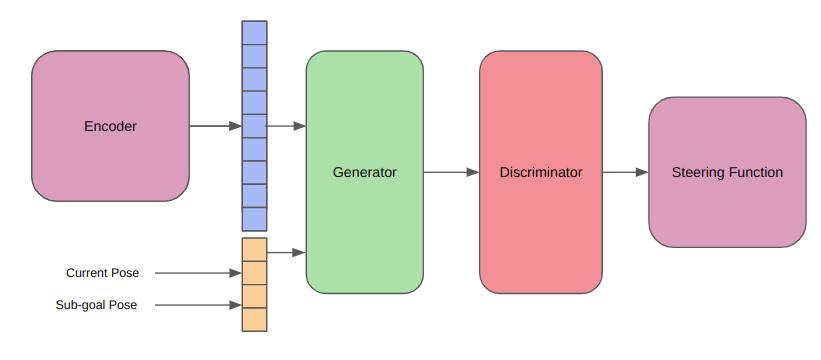

|
|
|
|
| Sampling-based planners have shown to be advantageous in replanning applications, especially for high dimensions robots. However, they often fail for applications where kinematically constrained robots are deployed in challenging environments, such as, an Ackermann car in cluttered indoor environments. This is owing to primarily the uniform sampling strategy which is at the core of these asymptotically optimal planner. And although many "informed" variants of these samplers have been developed over the years, few capture the rich information present in a robot's local surrounding as well as a human does. This introduces the benefit of deep learning in informed samplers. Prior research by MPC-MPNet has shows clear merit for this strategy, but it carries its own demerits. While MPC-MPNets are highly accurate and robust, they are offline planners and do not offer replanning. |
|
The Pipeline
In this work, we take inspiration from and seek to extend the MPC-MPNet architecture, for online replanning in cluttered environments. The above figure shows the pipeline of the MPC-MPNet architecture. Due to lack of reproducible open-source code, this project also involved extensive dataset generation, development of a data collection pipeline, mdoeling the kinematics of a Dubins car, training the informed sampler, and finally testing on novel environments.
Phase 1: Dataset GenerationThe project began with the need for a diverse and rich dataset for our learned sampler. This required implementing speed-optimized RRT, RRT* and I-RRT* planner, all with kinematic constraints. A comparative study was also done for completeness. This resulted in a custom, efficient C++ sampling-based planner which could be used to generate huge amounts of data. Using our own custom planner also offered us the flexibility of integrating any kinematic models we wished to test out, on the go.However, the development of this planner was not a speedy task. Implementing a simple Dubins car model also took multiple iterations. From using a optimization based approach, which optimized the radius of turning with respect to the goal, and later finalizing the determininstic Ackermann model to calculate the radius of turning, I explored multiple methods, which exposed me to the many ways of developing kinematic models, especially for speedy dataset generation.
Above figures show the kinematic I-RRT* in action on 3 different cluttered scenarios. What is usually given less credit are meaningful visualizations. To visualize this custom planner, I also developed a custom visualization pipeline, which allowed both live and offline visualization of the generated dataset, training, and testing pipelines (some of which are shown on this page).
Phase 2 : Data CollectionThe next and last important stage before wrapping up the data collection stage was to actually develop a streamlined pipeline for data collection. Up to a certain extent, this was done interatively with the dataloader pipeline of the model, and the data augmentation. After exploring different data representation methods, we settled on a heirarchical tree architecture, that stored parent-child relationships of each node. This also helped us store other valueable information about the relationship between nodes such as kinematic distance costs and radius of turning (including direction of turning).
Phase 3 : Large-Scale TrainingExtending the MPC-MPNet architecture, there are three main learned components in our pipeline.
The EncoderTo enable the planner to learn local features and incorporate those while sampling informed points, we need to downsample the local information into a more understandeable form. This is especially true for deployment scenarios, where the raw input might be some high-resolutino data such as a LiDAR. In our case however, we're training the platform in a binary grid world. So to simulate these real world cases, we define a few parameters.
To generate a low dimensional representation of the local map, we test two approaches. First, we attempt piecewise finetuning the encoder and the rest of the planner. This is done by training a variational autoencoder (VAE) using reconstruction loss, prior to training the MPC-MPNet, and using the latent space as local features representation. We also experiment with end-to-end training of the encoder with planner, to verify whether it learns task-specific features. From this study, we conclude that the finetuning approach performs better. The image below (bottom) shows a mock-up of the encoder training procedure, and the data generation procedure for the encoder (top).
The GeneratorTo retain the asymptotic optimality property, we begin by generating a random sample in the state space. We then perform a nearest neighbor search to find the target ndoe to extend. Once we have this node, we are ready to perform the generation operation. The generator is responsible for looking at the local features of a given node, and given the position of the node, and its heading, generate a set of candidate high-quality samples, which are kinematically feasible. Implicitly, the local map will be generated centered aroudn the robot (say for a LiDAR). This is convenient for us since it remove the requirement to supply the node position to the model, which will always be centered on the local map. We also make use of the fact that RRT* is a single shot planner, and can be used for multiple gial querying. This means that for a given start point, it finds the optimal path to every point in its state space. We leverage this property during the training of the generator. We train the generator on each node of each trajectory, generated on each map. We perform this operation, by sampling a random start-goal pair for any trajectory. Using this, we are able to find the local map of the node (start) in its given map, generate a latent space representation of this local map, and use the child node of the RRT* as the ground truth next node of the sampled node (since we ran the I-RRT* for 5,000 iterations, which is close to ground truth) as the ground truth value for the generator. We also exploit the stochasticity introduced in the system due to the dropout parameter, to ensure we get a stochastic set of predictions from the generator, which ensures we do not get stuck in any local minimas, and that the asymptotic optimality property is preserved. This stochastic generation helps us leverage the parallelization of neural networks, by generating hundreds of candidate points at one go, as opposed to traditional RRTs which only generate one point at a time.
The DiscriminatorThe discriminator is the Devil's advocate, taking as input the latent representationas before, and also the batch of samples generated by the generator. The aim of the discriminator is to quantify the quality of each sample. For our case, we train it to predict the elliptical distance of each sampled point from the currrent node, to the carrot planning waypoint (explained later). Miimizing this elliptical distance function helps us asymptoticallyconverge to the optimal solution over time. For training purposes, we later use another parameter, i.e., the carrot planning distance. This allows us to smartly sample the start-goal pair from any trajectory in the dataset, and use the ground truth cost between these nodes, to train our elliptical cost estimator, for a highly accurate discriminator. Alternate approaches tried for this included, distance-to-goal metrics, and quantifying the kinematic feasibility (steering angle, etc). We again leverage the parallelization capabilities of neural networks to perform this estimation.
The Steering FunctionThe steering function is the teacher that keeps their students in line. Once the discriminator selects the most feasible point from the set of candidate point, the steering function is responsible for propagating the state of the selected code to this new sample. Althought the generator does a pretty good job with spatial reasoning (good sample position), it does not do a very accurate job with orientation, and this we use the steering function to correct for orientation errors, and ultimately add the new node to the RRT tree. For our case, we use a Dubins car model, and this the steering function is just an Ackermann steering function.
Phase 4 : TestingSince what we're developing is a smart planner that identifies local patterns just like a human does, it still needs to have some global sense of direction. During testing, we implement this using carrot planning. This methods uses a vanilla A* global planner. For all A* waypoints within its visibility range, it picks the furthest waypoint, and similar to a donkey chasing a carrot on a stick, it incrementally follows this waypoint. Now that we have the carrot, we can use this as an intermediate waypoint to supply to the generator, and so on for the above mentioned pipeline.
This visualization simply depicts sparsely sampled waypoints on the A* path, and not the carrots, which can be seen while running the algorithm (see plots of grid at each stage of the pipeline above).
Overall PipelineThis is what the complete pipeline would look like.  |
|
ResultsWe see below the binary occupancy map, the green arrows depicting poses of each ndoe in the tree, red paths that depict kinematically feasible edges, black arrow as start, and blue arrow as goal. We see how the informed sampling heuristic helps find a path with very less samples!
|

This template is a modification to Jon Barron's website. Find the source code to my website here.